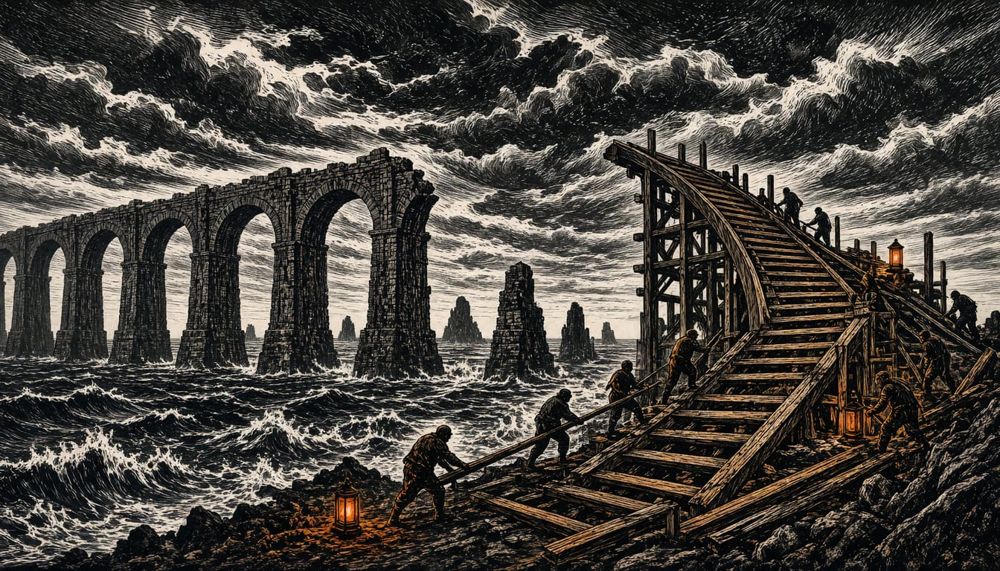

Opinion
Washington's troops are a bonus, not a plan
One signature and one veto can revoke the American guarantee, as the midterm result and the veto cap showed. The House should write Dutch defence strength into Dutch law now, funded from our own treasury.

America just told us the truth about its guarantee. On 3 November Democrats took both the House and the Senate, a Senate majority of 54 seats with Alaska and Mississippi still open, and European defence stocks fell before lunch: BAE Systems by 5.2 percent, Rheinmetall by 3.2. Traders priced in a fact we have been told not to say. The American promise lasts as long as one signature and one veto, and it can be revoked by any election result, in any direction, at any time. We did not vote in that election. Our security should not rest on a ballot we cannot cast.
The record did not start this week. Congress passed the Lindsey Graham Act with 86 votes, sanctions with near-total support from both parties. On 16 October President Trump waived them outright, days after the Treasury lifted restrictions on Russian diesel purchases. Earlier in 2026 the Pentagon delayed 400 million dollars in Ukraine assistance that Congress had authorised, and it sat idle for months. Congress voted; the money stayed still. The legislature legislated; the waiver undid it. He then posted a picture of a red cap printed with the word veto, a reminder that whatever the new Congress writes, he can erase with his own hand. That is not a breakdown of the American system. It is the American system.
The next shift already has a date. The Pentagon's force posture review, due by December, is expected by ECFR, a European foreign policy think tank, to move conventional military responsibility in NATO towards European ownership, to free resources for the Indo-Pacific. Elbridge Colby, undersecretary of war for policy, calls the plan NATO 3.0. Congress has set a statutory floor on American troop numbers in Europe, and the president contests it. The Supreme Court struck down his emergency tariffs in February; the administration moved them under Section 301, a power that needs no vote by lawmakers. A majority can be overruled by a court, and a court can be sidestepped by a single office. Every layer we were told protects us has been bypassed once already.
On 3 November the Democrats took both chambers of Congress. Daniel Hamilton of the Brookings Institution says they could attach Ukraine aid to must-pass bills like the NDAA, daring Trump to veto. Let them try. But money written into law is not money spent. ECFR's Nevada Joan Lee advises Europeans to treat earmarked funds as intent, not commitment. And James M. Lindsay of the Council on Foreign Relations notes Congress cannot compel the president to change his diplomacy with Russia. The veto pen does not change hands. Trump showed us the red veto cap himself.
We stop counting on Washington's troops, as a policy and as a habit of mind. The House of Representatives should write Dutch defence strength into Dutch law, with the 2027 national budget: binding annual growth in spending and conventional capability, funded from the Dutch treasury, in our own ships, shells and brigades. The cabinet should put that bill forward now, before the December review tells us what Washington intends to hand over. Every authorised American euro and every American soldier is welcome. They are a bonus. A bonus is never the plan.